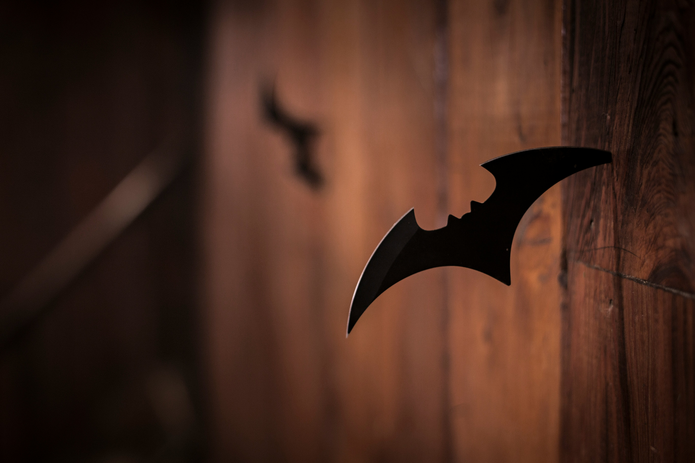
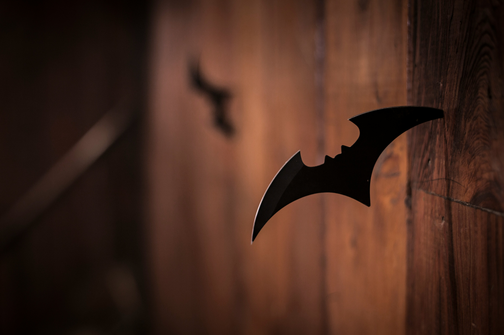
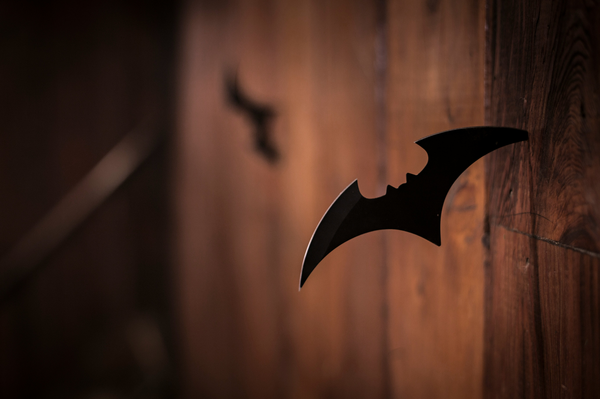

.png) 


Batman is a superhero appearing in American comic books published by DC Comics . The character was created by artist Bob Kane and writer Bill Finger , and debuted in the 27th issue of the comic book Detective Comics on March 30, 1939. In the DC Universe continuity, Batman is the alias of Bruce Wayne, a wealthy American playboy, philanthropist, and industrialist who resides in Gotham City. Batman's origin story features him swearing vengeance against criminals after witnessing the murder of his parents Thomas and Martha as a child, a vendetta tempered with the ideal of justice. He trains himself physically and intellectually, crafts a bat-inspired persona, and monitors the Gotham streets at night. Kane, Finger, and other creators accompanied Batman with supporting characters, including his sidekicks Robin and Batgirl; allies Alfred Pennyworth, James Gordon, and Catwoman; and foes such as the Penguin, the Riddler, Two-Face, and his archenemy, the Joker.
In early 1939, the success of Superman in Action Comics prompted editors at National Comics Publications (the future DC Comics) to request more superheroes for its titles. In response, Bob Kane created "the Bat-Man". Collaborator Bill Finger recalled that "Kane had an idea for a character called 'Batman,' and he'd like me to see the drawings. I went over to Kane's, and he had drawn a character who looked very much like Superman with kind of ...reddish tights, I believe, with boots ...no gloves, no gauntlets ...with a small domino mask, swinging on a rope. He had two stiff wings that were sticking out, looking like bat wings. And under it was a big sign ...BATMAN". According to Kane, the bat-wing-like cape was inspired by his childhood recollection of Leonardo da Vinci's sketch of an ornithopter flying device.
